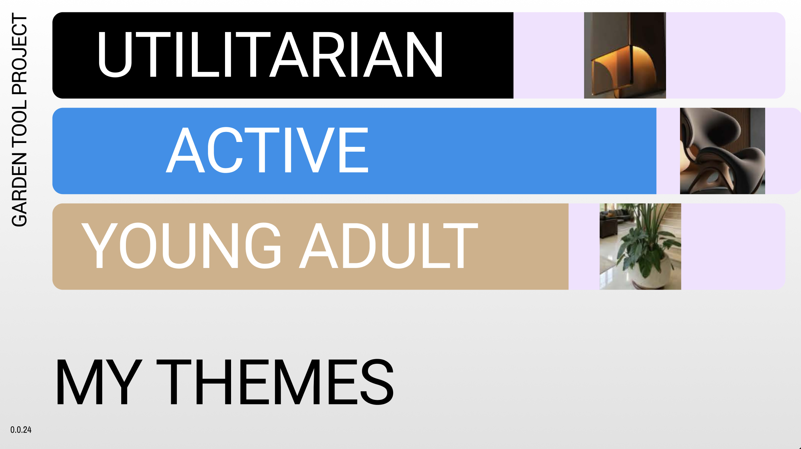
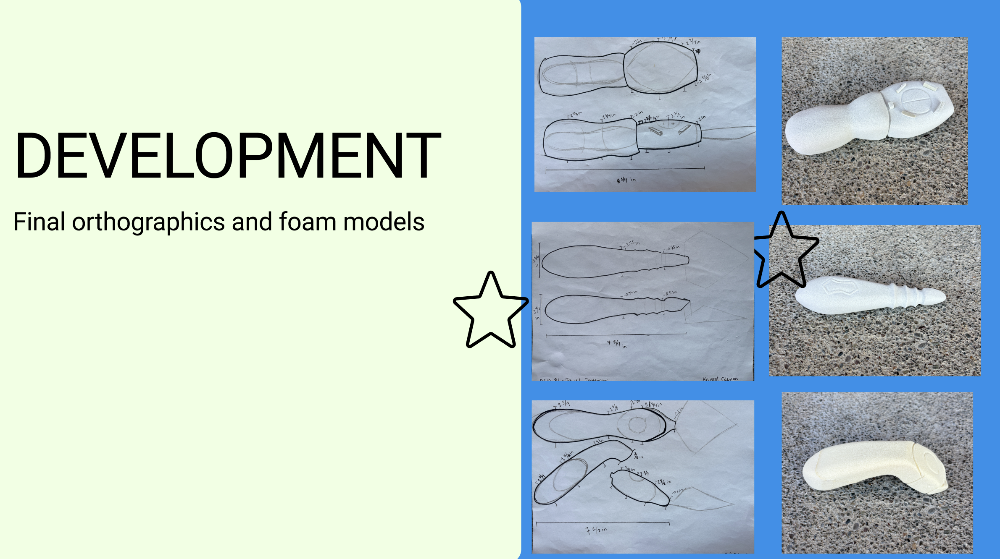

Garden Tool Set
Our design challenge was to create a garden tool set with no flat surfaces, blending three distinct themes. The philosophy behind this project was “form over function,” prioritizing ergonomics, flow, and user-centered design over aesthetic convention.


